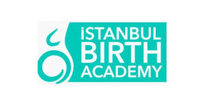

Pregnancy is a most crucial stage of parenting, however a neglected one for the last several millennia. And prior to conceiving a child, it is vastly empowering to explore the fecund universe of prenatal parenting and its impact on humanity.” in "Pregnancy Matters!" by Prenatal Alliance
On March 22, 2024, we celebrate the WORLD PREGNANCY DAY and this year theme - “Prenatal Wellness to Change the World” - to increase awareness about the global role and impact of prenatal life
Education starts in the womb
Pre-conception, pregnancy, birth, as well as the fourth trimester, provide unique opportunities for improving human societies, as in the womb, babies develop their emotions, their senses and physical organs, based on how the mother experiences life. This prenatal education is key for nations to succeed in breaking the transgenerational cycle of war and selfishness.
Why a World Pregnancy Day?
This celebration can help spread relevant information on the role parents have in the formation of their babies from conception to pregnancy and beyond, increasing awareness and improving prenatal education worldwide

Womb Peace is World Peace
Prenatal life’s relevance needs to become a fundamental human right in order to build a more sustainable, inclusive and peaceful world.
Where?
Our first celebration of the World Pregnancy Day will take place on March 22, 2024 at the 3-Day Prenatal Wellness Virtual Summit - Promoting Mother and Baby's Physical, Emotional, Spiritual and Social Health. This online summit will be held online on March 22, 23 and 24, promoted by Prenatal Alliance
The impact of prenatal life on our common future!
In this short video you will know about the importance of our time in the womb for the development of thriving, loving and altruistic children and adults.
ebook pregnancy matters! changing the world one pregnancy at a time
Subscribe our latest news and receive our FREE EBOOK!When you subscribe our newsletter you will receive the most important book you will ever read! You will learn what prenatal parenting really is and how important it is, the most important things about conscious conception, pregnancy, birth and breastfeeding, why pregnancy is so important for the quality of life of human civilization, how pregnancy is from the baby's perspective, and much much more!
Get my Fre eBbookWhat experts have to say
Our Supporters Supporters
